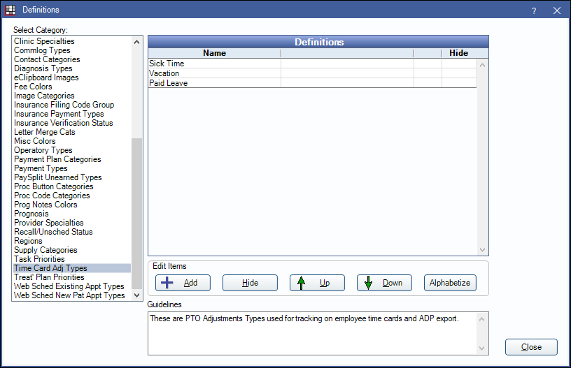

Definitions: Time Card Adj Types
In the Main Menu, click Setup, Definitions, Time Card Adj Types.
The Time Card Adj Types definition determines the list of Time Card PTO Type options available in Time Card Adjustments. This list is empty by default. Add new types as needed.
Double-click an existing item or click Add to create a new item. The Edit Definition window will open.

Enter the adjustment Name. The name will appear on the Out column in the Time Card.
Click OK to save.